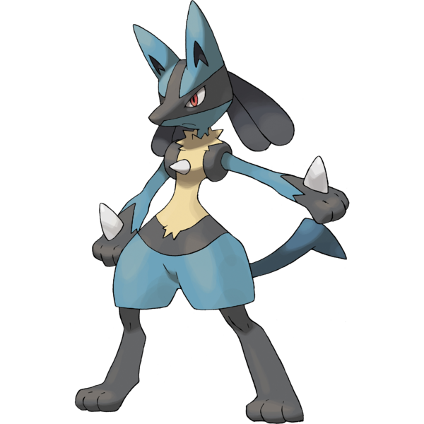

Pokemon Guide
With over a thousand unique Pokemon to discover, each one has characteristics that make it different. Pokemon can have different types, abilities, stats, and strengths that affect how they perform in battle. Understanding this information can help beginners compare Pokemon and recognize what makes each one useful.
This page introduces Charizard, Lucario, and Mewtwo as examples. Each Pokemon card shows its type, abilities, and base stats so you can see how these characteristics differ between Pokemon.
Understanding Pokemon Information
Types
A Pokemon's type is one of its most important characteristics. Types help determine a Pokemon's strengths and weaknesses in battle. Some Pokemon have one type, while others have two types.
Abilities
Abilities are special effects that Pokemon can have during battle. Different abilities can provide advantages or affect how a Pokemon interacts with certain moves and conditions.
Base Stats
Base stats represent a Pokemon's natural strengths in different areas. The six main stats are HP, Attack, Defense, Special Attack, Special Defense, and Speed. Higher values generally indicate that a Pokemon is naturally stronger in that area.
Popular Pokemon
Charizard

Charizard is a powerful Fire and Flying-type Pokemon known for its dragon-like appearance and fiery attacks. It is the final evolution of Charmander and has become one of the most recognizable Pokemon in the series.
Type: Fire/Flying
Abilities: Blaze
Base Stats
- HP: 78
- Attack: 84
- Defense: 78
- Sp. Atk: 109
- Sp. Def: 85
- Speed: 100
Lucario

Lucario is a Fighting and Steel-type Pokemon known for its sleek appearance and powerful aura. The final form of Riolu, it is a fast and powerful Pokemon that can use both physical and special attacks.
Type: Fighting/Steel
Abilities: Steadfast, Inner Focus
Base Stats
- HP: 70
- Attack: 110
- Defense: 70
- Sp. Atk: 115
- Sp. Def: 70
- Speed: 90
Mewtwo
Mewtwo is a powerful Psychic-type Legendary Pokemon known for its incredible psychic powers and regenerative abilities. It has some of the highest overall base stats of any Pokemon, making it an extremely powerful battler.
Type: Psychic
Abilities: Pressure
Base Stats
- HP: 106
- Attack: 110
- Defense: 90
- Sp. Atk: 154
- Sp. Def: 90
- Speed: 130